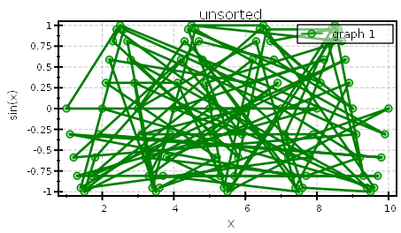
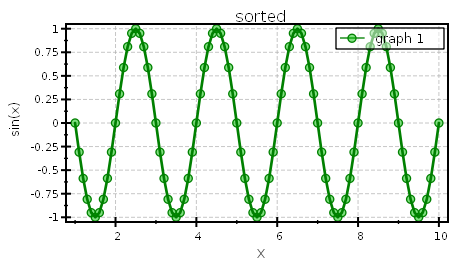

$$qf_commondoc_header.start$$ $$qf_commondoc_header.end$$
$$faq_start$$
The widgets in the plots tab sometime disappear or are no longer usable. What can I do?
$$faq_answer$$
This is a known bug. If this happens, simply close the RDR editor and reopen it. The widgets should be restored then.
$$faq_end$$
$$faq_start$$
My lines plots are chaotic, since my X-data is unsorted. What can I do?
$$faq_answer$$
You have two possibilities:
- You can sort your table with respect to the X-data column
- You can use the sort order option of the plots, which allow to sort the data before plotting


$$faq_end$$